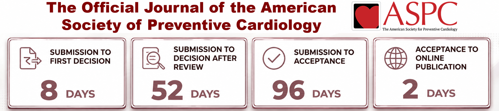

AJ
Featured Interview
What this study changes about cardiovascular prevention
A focused conversation with authors about the question, main finding, limitations, and clinical meaning.

Loading current issue papers…
A focused conversation with authors about the question, main finding, limitations, and clinical meaning.
Short, practical discussions tied directly to AJPC research.
Inside the journal’s approach to rigor, relevance, and communication.
A disciplined summary format that brings the clinical question, main finding, limitations, and practical meaning to the top.
A dedicated space for academic, clinical, research, fellowship, and industry opportunities relevant to the AJPC community.